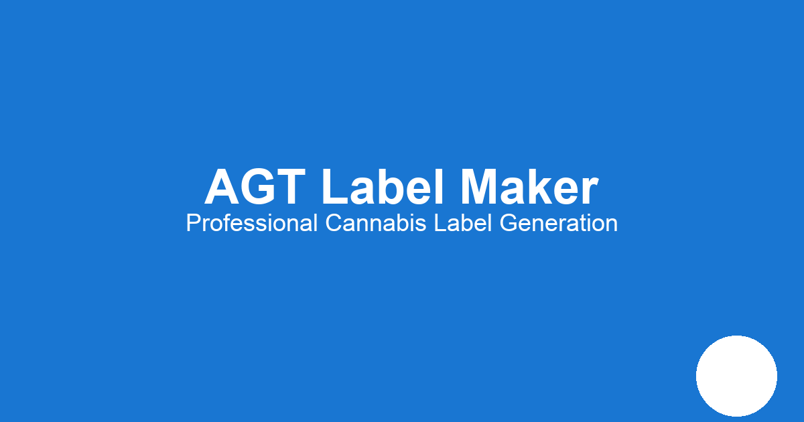

This page tests the social media preview functionality for the AGT Label Maker application.
This is the image that will appear when sharing the AGT Label Maker on social media platforms:
To test how your site will appear when shared on social media: